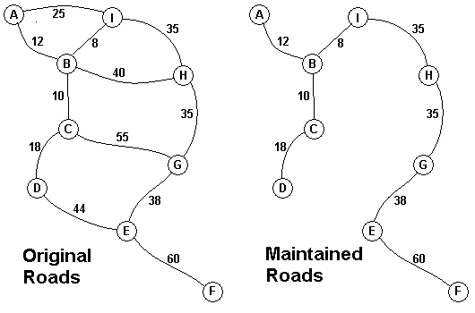

| Source file: | jungle.{c, cpp, java, pas} |
| Input file: | jungle.in |
| Output file: | jungle.out |

The input consists of one to 100 data sets, followed by a final line containing only 0. Each data set starts with a line containing only a number n, which is the number of villages, 1 < n < 27, and the villages are labeled with the first n letters of the alphabet, capitalized. Each data set is completed with n-1 lines that start with village labels in alphabetical order. There is no line for the last village. Each line for a village starts with the village label followed by a number, k, of roads from this village to villages with labels later in the alphabet. If k is greater than 0, the line continues with data for each of the k roads. The data for each road is the village label for the other end of the road followed by the monthly maintenance cost in aacms for the road. Maintenance costs will be positive integers less than 100. All data fields in the row are separated by single blanks. The road network will always allow travel between all the villages. The network will never have more than 75 roads. No village will have more than 15 roads going to other villages (before or after in the alphabet). In the sample input below, the first data set goes with the map above.
The output is one integer per line for each data set: the minimum cost in aacms per month to maintain a road system that connect all the villages. Caution: A brute force solution that examines every possible set of roads will not finish within the one minute time limit.
Example input:
9 A 2 B 12 I 25 B 3 C 10 H 40 I 8 C 2 D 18 G 55 D 1 E 44 E 2 F 60 G 38 F 0 G 1 H 35 H 1 I 35 3 A 2 B 10 C 40 B 1 C 20 0
Example output:
216 30
Last modified on October 26, 2002 at 7:20 PM.